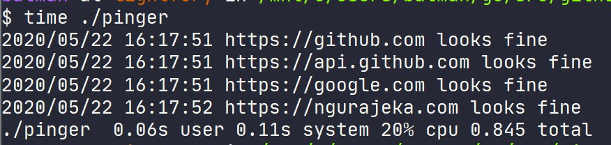
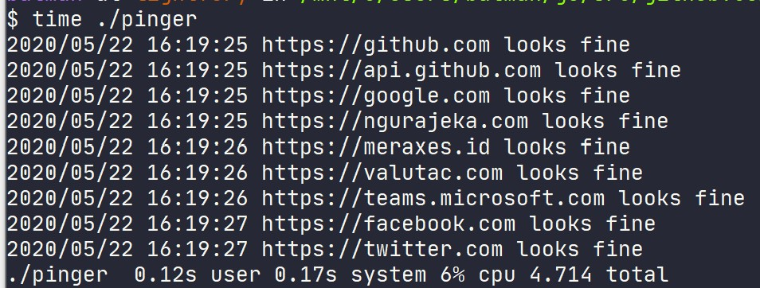

Memeriksa endpoint menggunakan Goroutine
Penjelasan usecase
Pada pembahasan usecase kali ini, kita akan menggunakan contoh dimana kita memiliki kebutuhan untuk melakukan pengecekan terhadap beberapa endpoint atau web secara berkala.
Untuk melakukan pemeriksaan terhadap sebuah website atau endpoint, bisa kita lakukan secara manual dengan mengunjungi alamat web atau endpoint tersebut melalui web browser atau http client yang biasanya kita gunakan.
Hanya saja, semakin banyak alamat yang harus kita kunjungi maka semakin lama juga waktu yang kita butuhkan.
Misal, untuk memeriksa satu alamat kita membutuhkan 1 menit, maka untuk memeriksa alamat sebanyak n maka waktu yang dibutuhkan adalah v = n * 1.
Dan tentu saja saya sendiri juga cukup malas untuk melakukan hal diatas secara manual dan berulang-ulang.
Maka dari itu membuat sebuah tools kecil untuk melakukan pekerjaan diatas sangatlah berguna.
Tentu saja kita bisa menggunakan aplikasi pihak ketiga yang sudah ada, tapi beberapa diantaranya berbayar.
Pemeriksaan tanpa goroutine
Misalkan, kita perlu untuk memeriksa alamat berikut:
Menggunakan Go, kita bisa menggunakan library http untuk melakukan hal tersebut,
package main
import (
"log"
"net/http"
)
func main() {
urls := []string{
"https://github.com",
"https://api.github.com",
"https://google.com",
"https://ngurajeka.com",
}
for _, url := range urls {
resp, err := http.Get(url)
if err != nil {
log.Printf("%s got err: %s", url, err.Error())
continue
}
defer resp.Body.Close()
if resp.StatusCode != http.StatusOK || resp.StatusCode != http.StatusCreated {
log.Printf("%s get error code: %d", url, resp.StatusCode)
continue
}
log.Printf("%s looks fine", url)
}
}
Saat kita mengeksusi kode diatas, maka kita akan mendapatkan hasil sebagai berikut:

Pada dasarnya, kode diatas sudah dapat kita gunakan untuk melakukan pemeriksaan terhadap lebih dari satu alamat sekaligus. Hanya saja masalahnya akan muncul saat kita akan memeriksa alamat yang lebih banyak.
Dari gambar diatas, untuk memeriksa 4 alamat diatas dibutuhkan sekitar 1.7s.
Perhatikan gambar dibawah, sebelum kita menjalankan programnya. Kita compile terlebih dahulu menjadi file binary agar setiap kita lagi proses compile sudah tidak perlu dilakukan.
$ go build -o pinger

Saat kita menggunakan program yang sudah dicompile menjadi binary, waktu yang dibutuhkan menjadi lebih sedikit karena proses compile sudah tidak dilakukan.
Sekarang, kita coba dengan menggunakan lebih banyak alamat yang perlu kita cek.
urls := []string{
"https://github.com",
"https://api.github.com",
"https://google.com",
"https://ngurajeka.com",
"https://meraxes.id",
"https://valutac.com",
"https://teams.microsoft.com",
"https://facebook.com",
"https://twitter.com",
}
Sebelum dijalankan, lakukan compile terlebih dahulu untuk memperbarui file binary yang kita miliki.

Pada proses diatas, setiap alamat diperiksa satu persatu secara sinkronos. Dengan semakin banyaknya alamat yang kita butuhkan untuk periksa, tentunya kita tidak ingin proses pemeriksaannya dilakukan secara sinkronos.
Alasannya, sebenarnya sama seperti kita melakukan pemeriksaan secara manual.
Misalkan untuk memeriksa satu alamat dibutuhkan waktu 5 detik, maka untuk memeriksa alamat sejumlah n dibutuhkan waktu v = n * 5.
Solusinya adalah menjalankan proses pemeriksaan setiap alamat secara bersamaan. Untuk beberapa bahasa pemrograman yang tidak mendukung proses async, maka tentu saja dibutuhkan tools terpisah untuk melakukan proses tersebut.
Pemeriksaan dengan goroutine
Pattern yang cukup sering digunakan untuk kasus similiar adalah dengan membuat sebuah penampungan data yang akan dikonsumsi oleh program lainnya yang bertugas untuk menjalankan proses utama yang ingin dilaksanakan secara async.
Dengan menjalankan program kita secara async, maka waktu yang dibutuhkan menjadi lebih sedikit.
Di Golang, terdapat sebuah fitur yaitu Goroutine. Dimana dengan goroutine kita dapat menjalankan sebuah proses secara async.
Berikut kode program diatas setelah kita ubah untuk menggunakan goroutine
package main
import (
"log"
"net/http"
"sync"
)
func main() {
urls := []string{
"https://github.com",
"https://api.github.com",
"https://google.com",
"https://ngurajeka.com",
"https://meraxes.id",
"https://valutac.com",
"https://teams.microsoft.com",
"https://facebook.com",
"https://twitter.com",
}
var wg sync.WaitGroup
for _, url := range urls {
wg.Add(1)
go func(v string) {
defer wg.Done()
resp, err := http.Get(v)
if err != nil {
log.Printf("%s got err: %s", v, err.Error())
return
}
defer resp.Body.Close()
if resp.StatusCode != http.StatusOK || resp.StatusCode != http.StatusCreated {
log.Printf("%s get error code: %d", v, resp.StatusCode)
return
}
log.Printf("%s looks fine", v)
}(url)
}
wg.Wait()
}
Perbedaan saat menggunakan goroutine dan tidak adalah proses utama yang ingin kita jalankan kita bungkus (wrap) menjadi sebuah anonymous function dan ditambahkan keyword go saat dijalankan. Bagian tersebut bisa kita buat menjadi fungsi terpisah agar lebih mudah dibaca dan dimodifikasi.
Pada kode diatas kita juga menggunakan sync.WaitGroup untuk menunggu semua proses selesai sebelum mengakhiri jalannya program utama (main).
Untuk mencoba melihat hasilnya, kita compile terlebih dahulu lalu jalankan kembali
Setelah menggunakan goroutine, proses pemeriksaan berjalan kurang dari 1 detik untuk total alamat yang sama dengan sebelumnya. Pada gambar diatas juga terlihat bahwa proses pemeriksaan sudah tidak dilakukan secara berurut lagi (sync).
Di goroutine juga terdapat channel yang bisa kita gunakan untuk berkomunikasi dari setiap program yang dieksekusi secara async kepada program utama yang menjalankannya. Mungkin bagian ini bisa kita bahas dengan usecase yang berbeda.
Metode diatas digunakan pada tools berikut https://github.com/Valutac/meraxes dan juga pada meraxes.id untuk versi web.